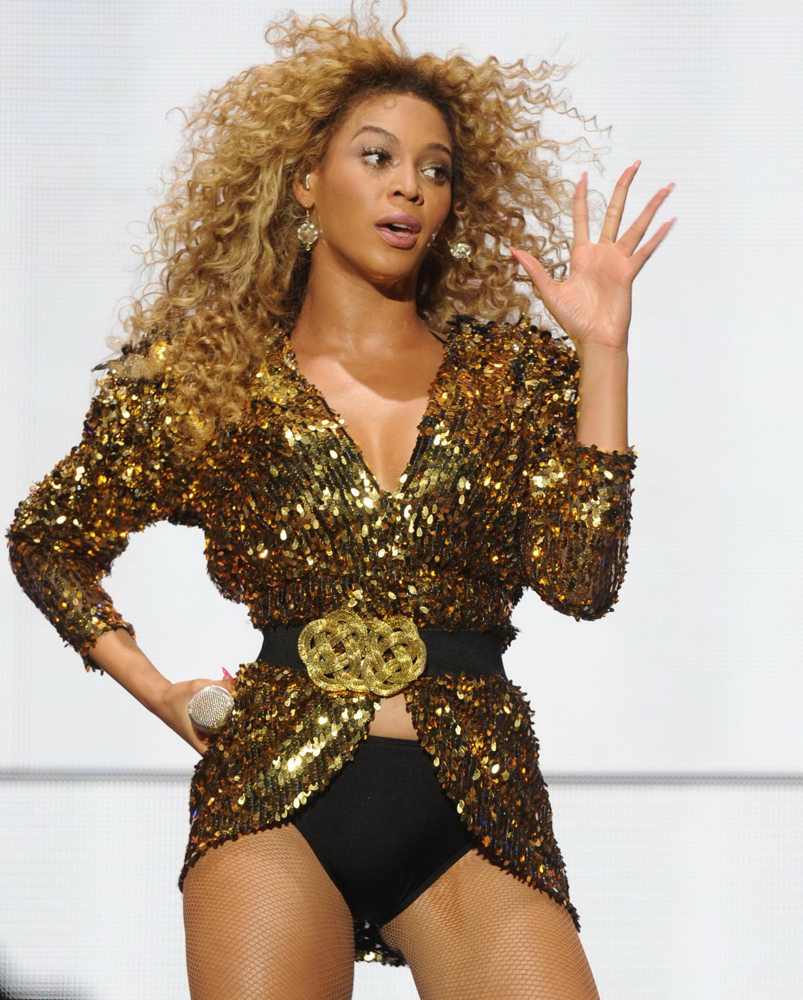
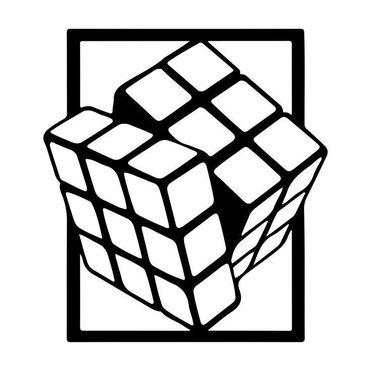
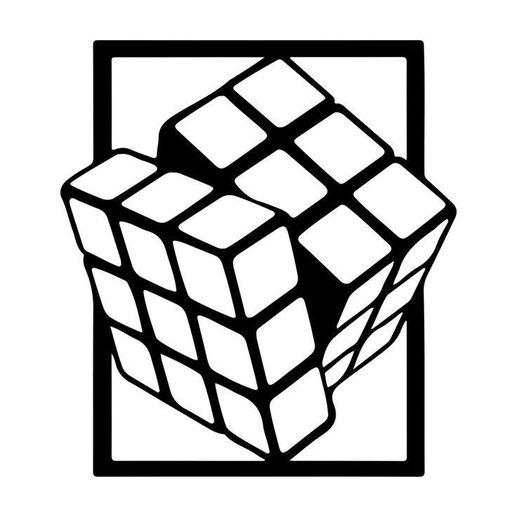
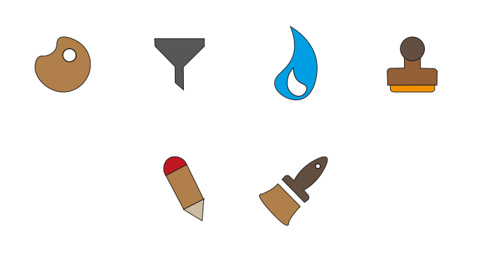
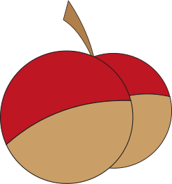
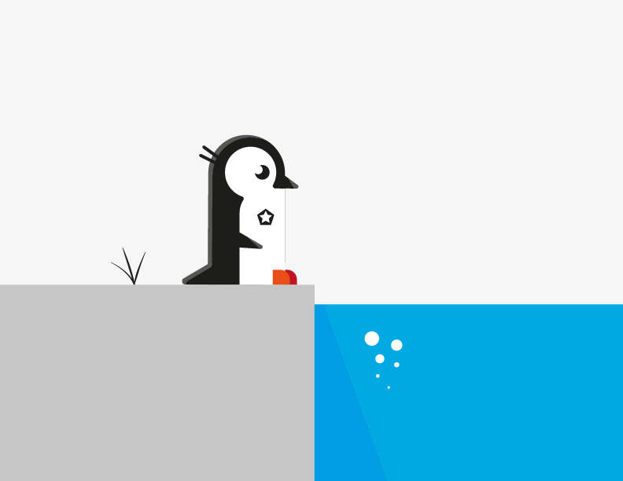
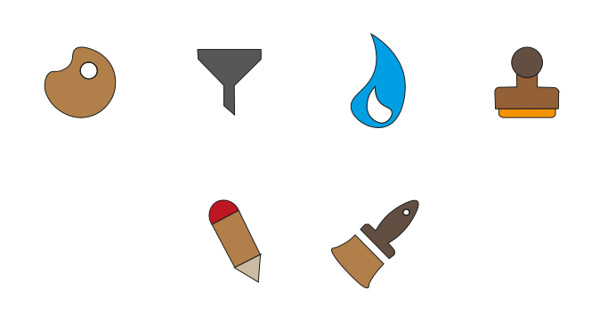
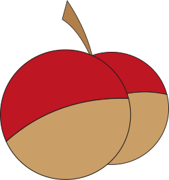
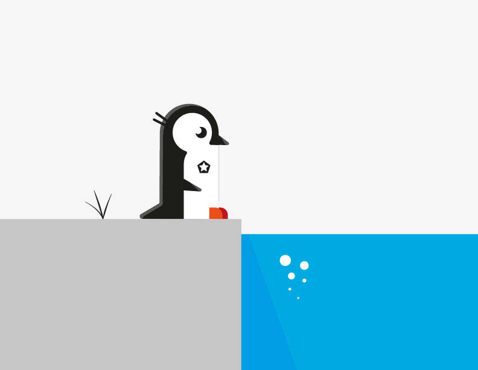

Вырезать фон с фото, итоговый вариант предоставить в формате png на прозрачном фоне с исходными размерами фотографии. Края должны быть аккуратными, четкими и ровными.


Найти фото Дженифер Энистон в анфас, итоговый вариант предоставить в двух вариантах в jpg:
1. формат 1х1 соотношение сторон 500х500 px
2. формат 3х4 соотношение сторон любое
Необходимо сделать постер с соотношением 720х1080 px. Для наращивания фона допускается небольшое растягивание краев изображения, добавление плавного градиента, обрезка краев изображения, не содержащих надпись. Запрещается: резкий переход цвета у границ слоев изображения, искажение зоны с текстом, неестественные следы ретуширования.
 


 




